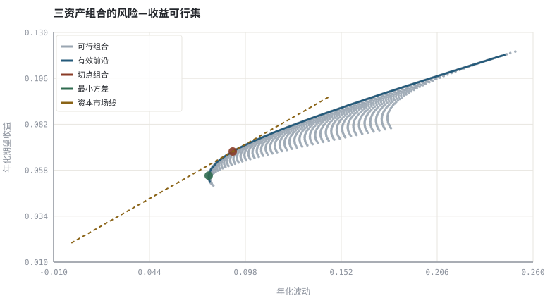
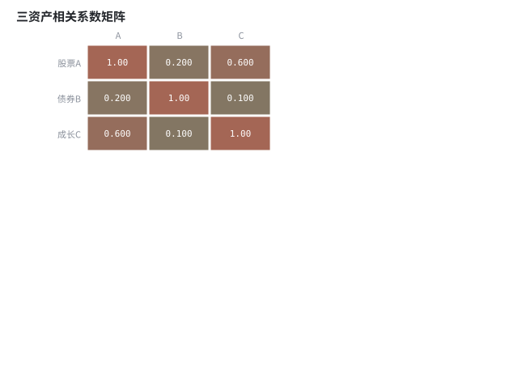

第 13 章均值-方差、有效前沿与夏普比率
把「分散投资」写成协方差矩阵的二次型，风险就从形容词变成可算的数。
本章位置：第 12 章处理单一标的的非线性 payoff，本章处理多标的的线性权重；第 14 章 · 资产配置、再平衡与定投 把最优权重问题退化成稳健的固定比例与再平衡规则。
组合优化就是在一个带 wᵀΣw 正则项的二次规划里搜参。网格扫描是最朴素的超参搜索；切点组合对 μ 的敏感与深度学习里对验证集过拟合是同一种病。
- 能从收益率序列估计协方差矩阵与相关系数。
- 能计算组合期望收益、波动与夏普比率。
- 能扫描权重得到有效前沿、最小方差组合与切点组合。
- 能解释相关系数小于 1 时风险为何可以被分散。
§知识点地图
每个知识点都配了 1～2 个扩展学习链接；本章完整资源清单见 扩展学习。
| # | 知识点 | 扩展学习 | 状态 |
|---|---|---|---|
| 1 | 协方差矩阵 | Modern portfolio theory · Efficient frontier | 正文已覆盖 |
| 2 | 相关系数与分散化 | Diversification (finance) · Modern portfolio theory | 正文已覆盖 |
| 3 | 组合期望收益 | Rate of return · Logarithmic return | 正文已覆盖 |
| 4 | 组合波动二次型 | Normal distribution · Volatility drag | 正文已覆盖 |
| 5 | 最小方差组合 | Modern portfolio theory · Efficient frontier | 正文已覆盖 |
| 6 | 有效前沿 | Efficient frontier · Sharpe ratio | 正文已覆盖 |
| 7 | 夏普比率与切点组合 | Modern portfolio theory · Efficient frontier | 正文已覆盖 |
| 8 | 资本市场线 | Modern portfolio theory · Efficient frontier | 正文已覆盖 |
§13.1组合风险是二次型
E[r_p] = wᵀμ | σ_p² = wᵀΣw = Σ_i Σ_j w_i w_j σ_i σ_j ρ_ij
关键是 ρ_ij：若两资产完全正相关（ρ=1），组合波动就是加权平均，没有分散效果；只要 ρ < 1，就有 σ_p < Σ w_i σ_i，差额就是分散化收益。这就是「不要把鸡蛋放在一个篮子里」的数学版本，也是全书第一次把风险写成矩阵运算。
注意σ_p² 是非线性的：权重翻倍，方差变四倍；资产数量增加时，个体风险被平均掉，剩下的共同部分无法分散——这个残差正是第 21 章因子与市场 beta 的起点。
§13.2三个特征组合
| 组合 | 优化目标 | 用途 | 对输入敏感吗 |
|---|---|---|---|
| 最小方差 GMV | min σ_p² | 风险预算的起点 | 对协方差敏感 |
| 切点组合 | max (E[r_p] − r_f)/σ_p | 与无风险资产搭配的最优风险组合 | 对 μ 极其敏感 |
| 等权 1/n | 不优化 | 稳健基线（常被用作对照组） | 几乎不敏感 |
均值-方差优化在工程上有个著名毛病：μ 的估计误差会被放大，最优权重常出现极端多空。教材里用网格扫描而非解析解，是为了让你直观看到「最优」对参数有多敏感。实践中常用约束、收缩估计或第 14 章的固定比例配置。
§13.3夏普比率衡量的是单位总风险
Sharpe = (E[r_p] − r_f) / σ_p
它假设投资者只关心均值与方差，且收益可自由借贷。厚尾、路径依赖与杠杆成本都会让它失真，因此第 27 章会补上索提诺、Calmar 与信息比率，第 30 章补上尾部约束。
§Python 分析实例
实验 13-1 · 权重扫描、有效前沿与切点组合
#!/usr/bin/env python3
# -*- coding: utf-8 -*-
"""三资产、给定 μ/Σ，穷举权重网格，画风险—收益散点与有效前沿。
数据为合成数据或模型示意，仅用于教学，不构成投资建议。
"""
from __future__ import annotations
import math
import pathlib
import random
import statistics
import sys
sys.path.insert(0, str(pathlib.Path(__file__).resolve().parents[3] / "tools"))
from chart import Chart, candlestick, heatmap, BLUE, RED, GREEN, AMBER
FIG = pathlib.Path(__file__).resolve().parents[1] / "fig"
FIG.mkdir(exist_ok=True)
random.seed(7)
# ---- 参数区 ----
MU = (0.08, 0.05, 0.12) # 年化期望收益
SIG = (0.18, 0.08, 0.25) # 年化波动
CORR = ((1.0, 0.20, 0.60),
(0.20, 1.0, 0.10),
(0.60, 0.10, 1.0))
RF = 0.02 # 无风险利率
STEP = 0.02 # 权重网格步长
# ---- 计算与作图 ----
COV = [[SIG[i] * SIG[j] * CORR[i][j] for j in range(3)] for i in range(3)]
def stats(w):
er = sum(w[i] * MU[i] for i in range(3))
var = sum(w[i] * w[j] * COV[i][j] for i in range(3) for j in range(3))
return er, math.sqrt(max(var, 0.0))
points, grid = [], int(round(1.0 / STEP))
for a in range(grid + 1):
for b in range(grid + 1 - a):
w = (a * STEP, b * STEP, 1.0 - (a + b) * STEP)
er, vol = stats(w)
points.append((vol, er, w, (er - RF) / vol if vol > 0 else 0.0))
best = max(points, key=lambda x: x[3])
gmv = min(points, key=lambda x: x[0])
lo = min(er for _v, er, _w, _s in points)
hi = max(er for _v, er, _w, _s in points)
frontier = []
for k in range(41):
target = lo + (hi - lo) * k / 40
near = [x for x in points if target - 0.002 <= x[1] <= target + 0.002]
if near:
frontier.append(min(near, key=lambda x: x[0]))
c = Chart(FIG / "13-frontier.svg", "三资产组合的风险—收益可行集", xlabel="年化波动", ylabel="年化期望收益")
c.scatter([x[0] for x in points], [x[1] for x in points], "#9aa6b2", label="可行组合", radius=1.8)
c.line([x[0] for x in frontier], [x[1] for x in frontier], BLUE, label="有效前沿", width=2.6)
c.scatter([best[0]], [best[1]], RED, label="切点组合", radius=6)
c.scatter([gmv[0]], [gmv[1]], GREEN, label="最小方差", radius=6)
c.line([0.0, best[0] * 1.6], [RF, RF + (best[1] - RF) * 1.6], AMBER,
label="资本市场线", dash="5 4")
print("前沿图:", c.save())
heatmap(FIG / "13-corr.svg", CORR, ["股票A", "债券B", "成长C"], ["A", "B", "C"],
title="三资产相关系数矩阵")
print("相关图:", str(FIG / "13-corr.svg"))
print("最小方差 w=(%.2f,%.2f,%.2f) σ=%.2f%% | 切点 w=(%.2f,%.2f,%.2f) E=%.2f%% σ=%.2f%% Sharpe=%.3f" %
(*gmv[2], 100 * gmv[0], *best[2], 100 * best[1], 100 * best[0], best[3]))操作：把 CORR[0][1] 与 CORR[1][0] 一起改成 −0.6，观察前沿如何向左移动；再只改其中一个，看看为什么协方差矩阵必须对称。 预期与判读：前沿上的每一点都是「给定收益下波动最小」的组合；切点组合是夏普最大的那一点。相关系数越接近 −1，前沿越往左凸，分散化收益越大。
改参数看趋势：把 MU[2] 提高 2 个百分点，切点权重会大幅挪向资产 C——这就是均值估计误差被放大的演示。 文件位置：part2/13-mean-variance/code/13-frontier.py


代码块右上角可一键复制；仓库里的 code/*.py 由 tools/extract_code.py 从这些代码块自动抽取。脚本只用标准库、固定 random.seed(7)，运行后写出 fig/*.svg；批量运行用 ./tools/run_python.sh。
§本章参考资料
按本章知识点挑选的精读资料；更多检索入口见 扩展学习。
Modern portfolio theory
百科 · 参考资料均值-方差框架与分散化
怎么用：均值-方差框架的标准表述https://en.wikipedia.org/wiki/Modern_portfolio_theory
Efficient frontier
百科 · 参考资料给定风险下最高期望收益的组合集合
怎么用：有效前沿的定义与性质https://en.wikipedia.org/wiki/Efficient_frontier
MIT OpenCourseWare · Finance
课程 · 参考资料投资学、资产定价与衍生品的免费课程材料
怎么用：配套的投资组合理论课程与讲义https://ocw.mit.edu/search/?q=finance
§常见误区
- 把相关系数矩阵写得不对称，导致方差出现负数。
- 用短期样本估计 μ 后直接求「最优」权重，得到极端解。
- 忽略无杠杆约束，让权重出现负值却未建模借券成本。
- 把夏普比率当成唯一目标，忽略厚尾与回撤。
§习题与思考
- 证明两资产 ρ=1 时组合波动等于加权平均。
- 在示例里加入 w_i ≥ 0 与 w_i ≤ 0.6 的约束，比较切点组合变化。
- 推导 wᵀΣw 对 w 的梯度，说明为什么解析最优解对 Σ 的误差敏感。
§扩展学习
以下资料按本章知识点挑选，可直接精读或对照真实数据；知识点地图里每一条也挂了 1～2 个直达链接。
- Modern portfolio theory（百科）：均值-方差框架与分散化
Modern portfolio theory - Efficient frontier（百科）：给定风险下最高期望收益的组合集合
Efficient frontier - Diversification (finance)（百科）：相关系数小于 1 时的风险削减
Diversification (finance) - Sharpe ratio（百科）：单位总风险的超额收益
Sharpe ratio - MIT OpenCourseWare · Finance（课程）：投资学、资产定价与衍生品的免费课程材料
MIT OpenCourseWare · Finance
继续扩展：在 Google Scholar 检索本章相关论文 · 在 MIT OCW 检索配套课程 · 在 arXiv 检索预印本 · 全书参考资源总表 · 附录 A 速查与链接总表
§延伸阅读与内链
- 第 14 章 · 资产配置、再平衡与定投 资产配置与再平衡；第 21 章 · 因子、CAPM 与 Fama-French 无法分散的共同部分如何变成因子；第 27 章 · 绩效度量与归因：夏普、回撤与 Brinson 绩效指标族。